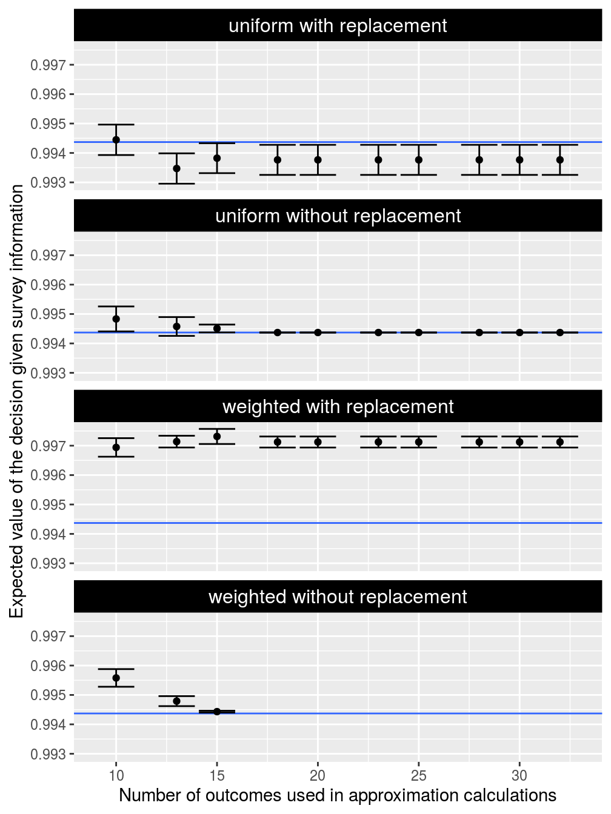

Here we will examine the approximation method for value of information analyses. To achieve this, we will compare estimates from the approximation method against the correct values from the exact methods. A crucial part of the approximation method involves generating a subset of outcomes to approximate the full set of outcomes, and so we will investigate several different methods for generating outcomes. We will also examine how the number of approximation outcomes affects the quality of the estimate.
Setup
Let’s start by setting up our R session. Here we will load some R packages and pre-set the random number generators for reproducibility.
Simulate data
Let’s simulate some data. To keep things simple, we will simulate data for 10 sites and 1 conservation feature (e.g. species). Of the 15 sites in total, we will simulate survey data for 10 sites—meaning that 5 sites will not have survey data.
# simulate site data site_data <- simulate_site_data( n_sites = 15, n_features = 1, proportion_of_sites_missing_data = 5 / 15)
## ...# print site data print(site_data)
## Simple feature collection with 15 features and 7 fields
## geometry type: POINT
## dimension: XY
## bbox: xmin: 0.02070792 ymin: 0.01366063 xmax: 0.7855831 ymax: 0.9272025
## CRS: NA
## # A tibble: 15 x 8
## survey_cost management_cost e1 e2 e3 f1 p1
## <dbl> <dbl> <dbl> <dbl> <dbl> <dbl> <dbl>
## 1 8.78717 69.5624 0.352685 -0.615935 -0.728549 0 4.60086e-1
## 2 5.36696 64.8589 -0.612633 1.15596 0.718512 NA 2.69503e-1
## 3 6.25925 57.5309 -1.53741 -0.281868 1.29149 NA 9.95906e-1
## 4 8.81519 66.1143 1.14228 -1.24025 -0.839952 1 5.56238e-1
## 5 5.45039 62.7456 -1.01539 -0.409767 0.518910 1 9.74110e-1
## 6 4.37280 60.5701 1.43650 2.52796 -0.253192 0 6.06472e-5
## 7 8.76247 67.2501 0.0259090 -0.402047 -0.519918 NA 5.28076e-1
## 8 8.80315 65.1071 0.838224 -0.894822 -0.878425 0 4.08044e-1
## 9 9.57884 66.6267 0.347615 -0.0776230 -0.635106 NA 1.83623e-1
## 10 6.37048 65.9617 1.08574 -0.560094 -0.813593 0 1.74159e-1
## 11 8.75928 67.5310 0.496681 0.0117405 -0.682279 1 1.13847e-1
## 12 9.58011 64.8944 0.722107 -0.580667 -0.846134 NA 2.64076e-1
## 13 5.49527 58.2507 -1.44014 -0.152584 1.18873 1 9.91781e-1
## 14 7.11370 64.8953 -0.608469 -0.0494300 0.128359 1 7.81913e-1
## 15 5.19364 70.5367 -1.23370 1.56944 2.35114 0 8.62330e-1
## # … with 1 more variable: geometry <POINT>
The site_data object is a spatially explicit dataset (i.e. sf) that contains information on the site locations and additional information for each site too. Here, each row corresponds to a different site and each column contains different information about the sites. The f1 column contains the results from previous surveys, where ones indicate that the feature was previously detected at a site, zeros indicate that the feature has not previously been detected at a site, and missing (NA) values mean that a site has not yet been surveyed. The p1 column contains modelled probability of occupancy predictions from environmental niche models. The e1, e2, and e3 columns contain environmental variables for each site. The survey_cost column contains the cost for surveying each site, and the management_cost column contains the cost for managing each site for conservation. Although the site_data object contains additional columns, they are not relevant here and so we will not bother with them. To help understand the simulated data, let’s create some visualizations.
# map of site occupancy data from previous surveys p1 <- site_data %>% mutate(f1 = as.character(f1)) %>% ggplot() + geom_sf(aes(color = f1)) + scale_color_manual(name = "", values = c("1" = "red", "0" = "black"), na.value = "blue") + labs(title = "presence/absence data") + theme(legend.position = "bottom") # make map of modelled probability of occupancy data p2 <- site_data %>% ggplot() + geom_sf(aes(color = p1)) + scale_color_viridis(name = "", limits = c(0, 1)) + labs(title = "probability data") + theme(legend.position = "bottom") # make map of site occupancy data from previous surveys p3 <- site_data %>% ggplot() + geom_sf(aes(color = management_cost)) + scale_color_viridis(name = "") + labs(title = "management costs") + theme(legend.position = "bottom") # display plots grid.arrange(p1, p2, p3, nrow = 1)

Next, we will simulate a survey scheme. This survey scheme will contain four of the five sites that have not previously been surveyed.
# generate survey scheme site_data$survey_scheme <- replace(rep(FALSE, nrow(site_data)), sample(which(is.na(site_data$f1)), 4), TRUE) # print survey scheme print(site_data$survey_scheme)
## [1] FALSE TRUE TRUE FALSE FALSE FALSE TRUE FALSE FALSE FALSE FALSE TRUE
## [13] FALSE FALSE FALSEWe will also set a total budget for surveying sites and managing sites for conservation. This budget will be 80% of the total costs of all planning units.
# set total budget total_budget <- sum(site_data$management_cost) * 0.8 # print total budget print(total_budget)
## [1] 777.9488After simulating data for the sites, we will simulate data for the conservation feature.
# simulate feature data feature_data <- simulate_feature_data( n_features = 1, proportion_of_survey_features = 1) # print feature data print(feature_data)
## # A tibble: 1 x 9
## name survey survey_sensitiv… survey_specific… model_sensitivi…
## <chr> <lgl> <dbl> <dbl> <dbl>
## 1 f1 TRUE 0.959335 0.895506 0.778723
## # … with 4 more variables: model_specificity <dbl>, preweight <dbl>,
## # postweight <dbl>, target <dbl>The feature_data object is a table (i.e. tibble) that contains information on the conservation feature. Here, each row corresponds to a different feature – and so it only has one row because we only have one feature – and each column contains different information about the feature(s). The name column contains the name of the feature. The preweight, postweight, and target columns contain values that specify the conservation benefit gained when sites are managed for conservation. The survey_sensitivity and survey_specificity columns denote the sensitivity (probability of correctly detecting a presence) and specificity (probability of correctly detecting an absence) of the survey methodology. Finally, the model_sensitivity and model_specificity columns denote the sensitivity and specificity of the model used to predict the occupancy probabilities in the site_data object (i.e. values in the p1 column).
Furthermore, our calculations will involve fitting new species distribution models and so we will define some parameters for model fitting. Generally, these parameters would be obtained using the fit_occupancy_models function, but here we will define them manually to keep things simple.
Benchmark analysis
After simulating the data, we can conduct our benchmark analysis. Our simulated data contains one feature and ten planning units in total. This means that there is a total of 32 outcomes. Since we are interested in understanding how the number outcomes in the approximation method affects its accuracy, we will create a set of containing different numbers of outcomes (i.e. n_approx_outcomes).
# create set of number of approximation outcomes n_approx_outcomes <- ceiling(seq(10, n_states(1, 5), length.out = 10)) # print outcomes print(n_approx_outcomes)
## [1] 10 13 15 18 20 23 25 28 30 32This benchmark analysis will examine various approaches for approximating the expected value of the decision given survey information. To evaluate the accuracy of the approximation calculations, we will calculate exactly what this number should be given the simulated data.
# calculate the correct value of the decision given survey information using # exact methods ev_survey <- evdsi( site_data = site_data, feature_data = feature_data, site_occupancy_columns = "f1", site_probability_columns = "p1", site_env_vars_columns = c("e1", "e2", "e3"), site_survey_scheme_column = "survey_scheme", site_survey_cost_column = "survey_cost", site_management_cost_column = "management_cost", feature_survey_column = "survey", feature_survey_sensitivity_column = "survey_sensitivity", feature_survey_specificity_column = "survey_specificity", feature_model_sensitivity_column = "model_sensitivity", feature_model_specificity_column = "model_specificity", feature_preweight_column = "preweight", feature_postweight_column = "postweight", feature_target_column = "target", total_budget = total_budget, xgb_parameters = xgb_parameters) # print value print(ev_survey)
## [1] 129.4626Next, we will benchmark the approximation methods for calculating the expected value of the decision given current information using the simulated data. Here, we will examine four methods for generating outcomes: uniform with replacement, uniform without replacement, weighted with replacement, and weighted without replacement. The uniform methods randomly sample outcomes and do not consider the prior probability of each outcome occurring. The weighted methods, on the other hand, are select outcomes that have a greater chance of occurring. To account for stochasticity in the approximation methods – i.e. each run will give a different answer depending on the outcome of the random number generator – we will report means and standard errors for 25 replicates per number of approximation outcomes. Furthermore since the weighted without replacement method is computationally inefficient for generating subsets that contain a high proportion of the total outcomes, we will not explore the full range of subsets for this method.
# define function for calculating standard error se <- function(x) sqrt(var(x) / length(x)) # estimate the correct value of the decision given survey information using # approximation methods ev_prime_survey <- expand.grid(method = c("uniform_with_replacement", "uniform_without_replacement", "weighted_with_replacement", "weighted_without_replacement"), n = n_approx_outcomes) %>% filter(!((method == "weighted_without_replacement") & (n >= (max(n_approx_outcomes) * 0.5)))) %>% plyr::ddply(c("method", "n"), function(x) { result <- approx_evdsi( site_data = site_data, feature_data = feature_data, site_occupancy_columns = "f1", site_probability_columns = "p1", site_env_vars_columns = c("e1", "e2", "e3"), site_survey_scheme_column = "survey_scheme", site_survey_cost_column = "survey_cost", site_management_cost_column = "management_cost", feature_survey_column = "survey", feature_survey_sensitivity_column = "survey_sensitivity", feature_survey_specificity_column = "survey_specificity", feature_model_sensitivity_column = "model_sensitivity", feature_model_specificity_column = "model_specificity", feature_preweight_column = "preweight", feature_postweight_column = "postweight", feature_target_column = "target", total_budget = total_budget, n_approx_replicates = 25, n_approx_outcomes_per_replicate = x$n, method_approx_outcomes = as.character(x$method), xgb_parameters = xgb_parameters) data.frame(n = x, mean = mean(result), se = se(result)) }) %>% as_tibble() %>% mutate(lower = mean - se, upper = mean + se) %>% mutate(method = gsub("_", " ", method, fixed = TRUE))
Now, let’s visualize the results.
# create plot ggplot() + geom_hline(yintercept = ev_survey, colour = "#3366FF") + geom_point(aes(x = n, y = mean), ev_prime_survey) + geom_errorbar(aes(x = n, ymin = lower, ymax = upper), ev_prime_survey) + facet_wrap(~ method, ncol = 1) + xlab("Number of outcomes used in approximation calculations") + ylab("Expected value of the decision given survey information") + theme(strip.background = element_rect(color = "black", fill = "black"), strip.text = element_text(color = "white", size = 12))

Broadly speaking, we can see that the estimates (points) get closer to the correct value (blue line) when more outcomes are used in the approximation calculations (greater values on the x-axis). Furthermore, we can see that the estimates become more precise (smaller error bars) when more outcomes are used in the approximation calculations (greater values on the x-axis). This pattern is true for most of the sampling methods – except for the weighted with replacement method which performs really poorly – and shows that most the approximation method is more accurate when we use a greater number of outcomes for the calculations. In particular, we can see that the weighted without replacement method is the most useful because it converges to the correct value (blue line) with the fewest approximation outcomes.